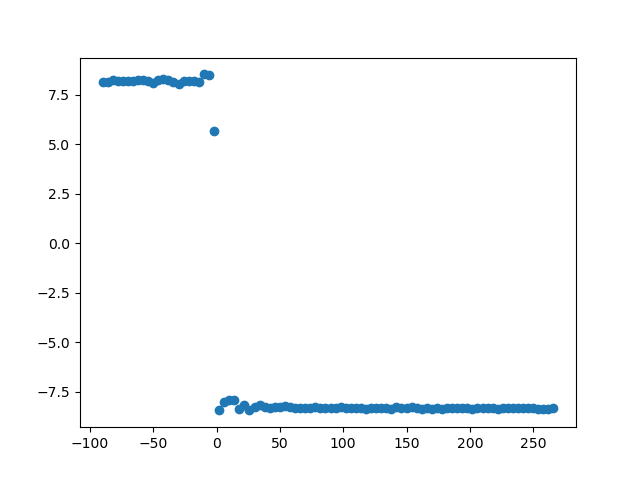

Phase slope index#
This function may be called for data in the time domain, the frequency domain, or (if correctly aligned) in the complex coherency domain.
Note
Use the following function for time domain data.
Note
Use the following function for frequency domain data.
Note
Use the following function for complex coherency domain data.
The following code example shows how to apply the phase slope index to measure sfc.
import numpy as np
import matplotlib
matplotlib.use("Qt5agg")
import matplotlib.pyplot as plt
import finn.sfc.td as td
import finn.sfc.fd as fd
import finn.sfc.cd as cohd
import finn.sfc._misc as misc
import demo_data.demo_data_paths as paths
def main():
data = np.load(paths.fct_sfc_data)
frequency_sampling = 5500
frequency_peak = 30
noise_weight = 0.2
phase_min = -90
phase_max = 270
phase_step = 4
fmin = 28
fmax = 33
#Generate data
offset = int(np.ceil(frequency_sampling/frequency_peak))
loc_data = data[offset:]
signal_1 = np.zeros((loc_data).shape)
signal_1 += loc_data
signal_1 += np.random.random(len(loc_data)) * noise_weight
conn_vals = list()
fig = plt.figure()
for phase_shift in np.arange(phase_min, phase_max, phase_step):
loc_offset = offset - int(np.ceil(frequency_sampling/frequency_peak * phase_shift/360))
loc_data = data[(loc_offset):]
signal_2 = np.zeros(loc_data.shape)
signal_2 += loc_data
signal_2 += np.random.random(len(loc_data)) * noise_weight
plt.cla()
plt.plot(signal_1[:500], color = "blue")
plt.plot(signal_2[:500], color = "red")
plt.title("Signal shifted by %2.f degree around %2.2fHz" % (float(phase_shift), float(frequency_peak)))
plt.show(block = False)
plt.pause(0.001)
conn_value_td = calc_from_time_domain(signal_1, signal_2, frequency_sampling, fmin, fmax)
conn_value_fd = calc_from_frequency_domain(signal_1, signal_2, frequency_sampling, fmin, fmax)
conn_value_coh = calc_from_coherency_domain(signal_1, signal_2, frequency_sampling, fmin, fmax)
if (np.isnan(conn_value_td) == False and np.isnan(conn_value_fd) == False and np.isnan(conn_value_coh) == False):
if (conn_value_td != conn_value_fd or conn_value_td != conn_value_coh):
print("Error")
conn_vals.append(conn_value_td if (np.isnan(conn_value_td) == False) else 0)
plt.close(fig)
plt.figure()
plt.scatter(np.arange(phase_min, phase_max, phase_step), conn_vals)
plt.show(block = True)
def calc_from_time_domain(signal_1, signal_2, frequency_sampling, f_min, f_max):
nperseg_outer = int(frequency_sampling * 3)
nperseg_inner = frequency_sampling
nfft = frequency_sampling
return td.run_psi(signal_1, signal_2, nperseg_outer, frequency_sampling, nperseg_inner, nfft, "hanning", "zero", f_min, f_max, f_step_sz = 1)
def calc_from_frequency_domain(signal_1, signal_2, frequency_sampling, f_min, f_max):
nperseg_outer = int(frequency_sampling * 3)
nperseg_inner = frequency_sampling
nfft = frequency_sampling
fd_signals_1 = list()
fd_signals_2 = list()
for idx_start in np.arange(0, len(signal_1), nperseg_outer):
seg_data_X = misc._segment_data(signal_1[idx_start:int(idx_start + nperseg_outer)], nperseg_inner, pad_type = "zero")
seg_data_Y = misc._segment_data(signal_2[idx_start:int(idx_start + nperseg_outer)], nperseg_inner, pad_type = "zero")
(bins, fd_signal_1) = misc._calc_FFT(seg_data_X, frequency_sampling, nfft, window = "hanning")
(_, fd_signal_2) = misc._calc_FFT(seg_data_Y, frequency_sampling, nfft, window = "hanning")
fd_signals_1.append(fd_signal_1)
fd_signals_2.append(fd_signal_2)
return fd.run_psi(fd_signals_1, fd_signals_2, bins, f_min, f_max, 1)
def calc_from_coherency_domain(signal_1, signal_2, frequency_sampling, f_min, f_max):
nperseg_outer = int(frequency_sampling * 3)
nperseg_inner = frequency_sampling
nfft = frequency_sampling
data_coh = list()
for idx_start in np.arange(0, len(signal_1), nperseg_outer):
(bins, cc) = td.run_cc(signal_1[idx_start:(idx_start + nperseg_outer)], signal_2[idx_start:(idx_start + nperseg_outer)], nperseg_inner, pad_type = "zero",
fs = frequency_sampling, nfft = nfft, window = "hanning")
data_coh.append(cc)
return cohd.run_psi(data_coh, bins, f_min, f_max)
main()
The phase slope index is a reliable measure of connectivity which is commonly normalized via dividing a series of PSI estimates by their variance. Hence, the normalization increases the amount of data needed.
